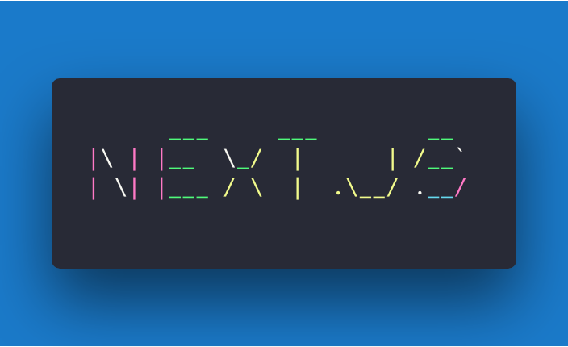
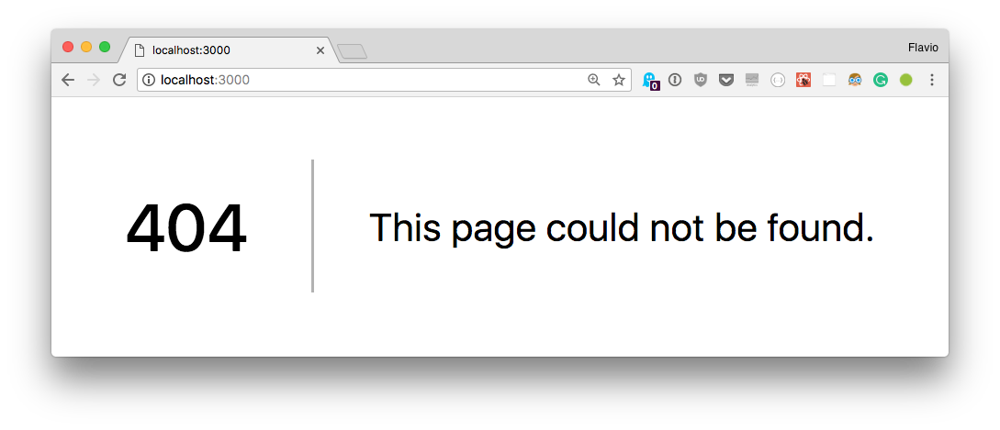
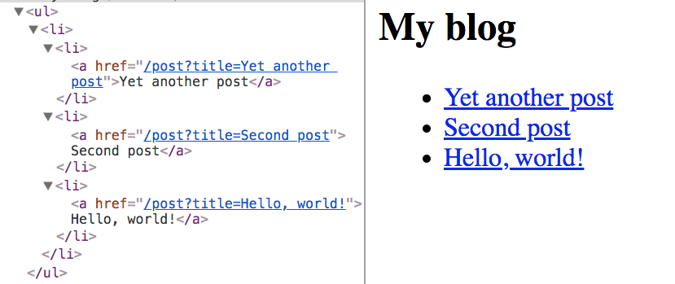
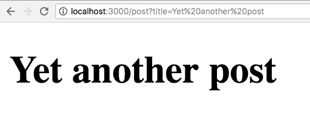

Working on a modern JavaScript application powered by React is awesome until you realize that there are a couple problems related to rendering all the content on the client-side.
First, the page takes longer to the become visible to the user, because before the content loads, all the JavaScript must load, and your application needs to run to determine what to show on the page.
Second, if you are building a publicly available website, you have a content SEO issue. Search engines are getting better at running and indexing JavaScript apps, but it's much better if we can send them content instead of letting them figure it out.
The solution to both of those problems is server rendering, also called static pre-rendering.
Next.js is one React framework to do all of this in a very simple way, but it's not limited to this. It's advertised by its creators as a zero-configuration, single-command toolchain for React apps.
It provides a common structure that allows you to easily build a frontend React application, and transparently handle server-side rendering for you.
Here is a non-exhaustive list of the main Next.js features:
pages folder, and you don't need any configuration (you have customization options of course).Link component, used to link together different pages, supports a prefetch prop which automatically prefetches page resources (including code missing due to code splitting) in the background.next export command, Next.js allows you to export a fully static site from your app.Next.js supports all the major platforms: Linux, macOS, Windows.
A Next.js project is started easily with npm:
npm install next react react-dom
or with Yarn:
yarn add next react react-dom
Create a package.json file with this content:
{
"scripts": {
"dev": "next"
}
}
If you run this command now:
npm run dev
the script will raise an error complaining about not finding the pages folder. This is the only thing that Next.js requires to run.
Create an empty pages folder, and run the command again, and Next.js will start up a server on localhost:3000.
If you go to that URL now, you'll be greeted by a friendly 404 page, with a nice clean design.

Next.js handles other error types as well, like 500 errors for example.
In the pages folder create an index.js file with a simple React functional component:
export default () => (
<div>
<p>Hello World!</p>
</div>
)
If you visit localhost:3000, this component will automatically be rendered.
Why is this so simple?
Next.js uses a declarative pages structure, which is based on the filesystem structure.
Simply put, pages are inside a pages folder, and the page URL is determined by the page file name. The filesystem is the pages API.
Open the page source, View -> Developer -> View Source with Chrome.
As you can see, the HTML generated by the component is sent directly in the page source. It's not rendered client-side, but instead it's rendered on the server.
The Next.js team wanted to create a developer experience for server rendered pages similar to the one you get when creating a basic PHP project, where you simply drop PHP files and you call them, and they show up as pages. Internally of course it's all very different, but the apparent ease of use is clear.
Let's create another page, in pages/contact.js
export default () => (
<div>
<p>
<a href="mailto:my@email.com">Contact us!</a>
</p>
</div>
)
If you point your browser to localhost:3000/contact this page will be rendered. As you can see, also this page is server rendered.
Note how you did not have to restart the npm process to load the second page. Next.js does this for you under the hood.
Server rendering is very convenient in your first page load, for all the reasons we saw above, but when it comes to navigating inside the website, client-side rendering is key to speeding up the page load and improving the user experience.
Next.js provides a Link component you can use to build links. Try linking the two pages above.
Change index.js to this code:
import Link from 'next/link'
export default () => (
<div>
<p>Hello World!</p>
<Link href="/contact">
<a>Contact me!</a>
</Link>
</div>
)
Now go back to the browser and try this link. As you can see, the Contact page loads immediately, without a page refresh.
This is client-side navigation working correctly, with complete support for the History API, which means your users back button won't break.
If you now cmd-click the link, the same Contact page will open in a new tab, now server rendered.
A good use case for Next.js is a blog, as it's something that all developers know how it works, and it's a good fit for a simple example of how to handle dynamic pages.
A dynamic page is a page that has no fixed content, but instead display some data based on some parameters.
Change index.js to
import Link from 'next/link'
const Post = props => (
<li>
<Link href={`/post?title=${props.title}`}>
<a>{props.title}</a>
</Link>
</li>
)
export default () => (
<div>
<h2>My blog</h2>
<ul>
<li>
<Post title="Yet another post" />
<Post title="Second post" />
<Post title="Hello, world!" />
</li>
</ul>
</div>
)
This will create a series of posts and will fill the title query parameter with the post title:

Now create a post.js file in the pages folder, and add:
export default props => <h1>{props.url.query.title}</h1>
Now clicking a single post will render the post title in a h1 tag:

You can use clean URLs without query parameters. The Next.js Link component helps us by accepting an as attribute, which you can use to pass a slug:
import Link from 'next/link'
const Post = props => (
<li>
<Link as={`/${props.slug}`} href={`/post?title=${props.title}`}>
<a>{props.title}</a>
</Link>
</li>
)
export default () => (
<div>
<h2>My blog</h2>
<ul>
<li>
<Post slug="yet-another-post" title="Yet another post" />
<Post slug="second-post" title="Second post" />
<Post slug="hello-world" title="Hello, world!" />
</li>
</ul>
</div>
)
Next.js by default provides support for styled-jsx, which is a CSS-in-JS solution provided by the same development team, but you can use whatever library you prefer, like Styled Components.
Example:
export default () => (
<div>
<p>
<a href="mailto:my@email.com">Contact us!</a>
</p>
<style jsx>{`
p {
font-family: 'Courier New';
}
a {
text-decoration: none;
color: black;
}
a:hover {
opacity: 0.8;
}
`}</style>
</div>
)
Styles are scoped to the component, but you can also edit global styles adding global to the style element:
export default () => (
<div>
<p>
<a href="mailto:my@email.com">Contact us!</a>
</p>
<style jsx global>{`
body {
font-family: 'Benton Sans', 'Helvetica Neue';
margin: 2em;
}
h2 {
font-style: italic;
color: #373fff;
}
`}</style>
</div>
)
A Next.js application can be easily exported as a static site, which can be deployed on one of the super fast static site hosts, like Netlify or Firebase Hosting, without the need to set up a Node environment.
The process requires you to declare the URLs that compose the site, but it's a straightforward process.
Creating a production-ready copy of the application, without source maps or other development tooling that aren't needed in the final build, is easy.
At the beginning of this tutorial you created a package.json file with this content:
{
"scripts": {
"dev": "next"
}
}
which was the way to start up a development server using npm run dev.
Now just add the following content to package.json instead:
{
"scripts": {
"dev": "next",
"build": "next build",
"start": "next start"
}
}
and prepare your app by running npm run build and npm run start.
The company behind Next.js provides an awesome hosting service for Node.js applications, called Now.
Of course they integrate both their products so you can deploy Next.js apps seamlessly, once you have Now installed, by running the now command in the application folder.
Behind the scenes Now sets up a server for you, and you don't need to worry about anything, just wait for your application URL to be ready.
You can set up multiple Next.js instances to listen to different URLs, yet the application to an outside user will simply look like it's being powered by a single server: https://github.com/zeit/next.js/#multi-zones
Next.js has a list of plugins at https://github.com/zeit/next-plugins
If you're looking to experiment, I recommend Glitch. Check out my Next.js Glitch Starter Kit.
I can't possibly describe every feature of this great framework, and the main place to read more about Next.js is the project readme on GitHub.